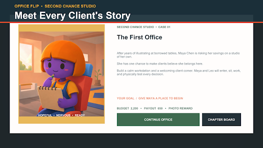

Updated August 1, 2026
Office Flip:
Second Chance
A story-driven office renovation and interior design game with five client contracts, character customization and multi-floor spaces.

Updated August 1, 2026
A story-driven office renovation and interior design game with five client contracts, character customization and multi-floor spaces.
